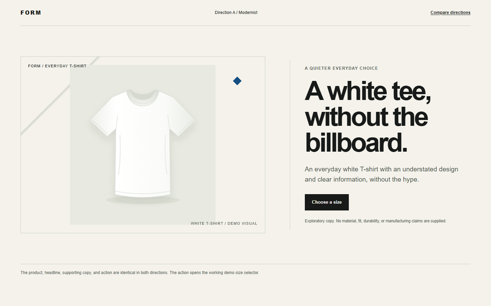
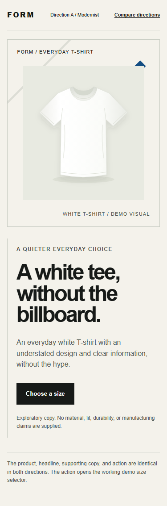
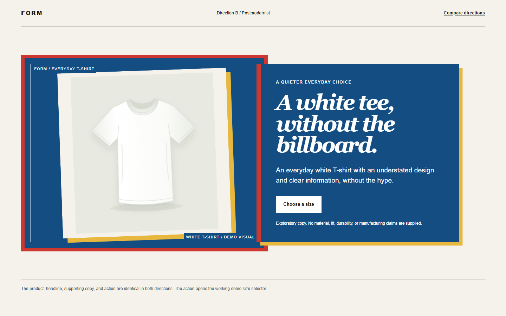
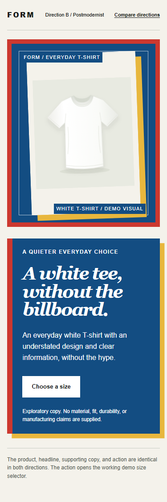

Direction A / Modernist
Reference:
Josef Müller-Brockmann, Musica Viva, 1958. Linocut and letterpress; printed by City-Druck, AG, Zürich.
The poster places a diagonal information block and small colored
geometric marks inside a large open field. The preview borrows that
measured hierarchy and print-ready vector precision, not its exact
arrangement.

Open full modernist preview

-
Uses a measured grid, restrained alignment, and open space to keep
the shirt and decision first.
-
Small vector geometry and clear type hierarchy translate the
poster's printed structure into a screen layout.
-
Intended effect: make the understated choice feel easy to assess.
Risk: the restraint may feel too plain to signal distinctiveness.
Direction B / Postmodernist
Reference:
Barbara Kruger, Untitled (Can I Help You?), 1987. SFMOMA lists it as a lenticular photograph.
The artwork sets a blue text panel inside a vivid red surround and
layers direct-address lettering. The preview adapts that framing and
mix of languages without using the artwork's image or words.

Open full postmodernist preview

-
Layers a blue text panel, a red frame, and a paper-like shirt
card, borrowing the reference's direct graphic address without
copying its text or image.
-
Mixes display type with a conversational headline while keeping
the support and action easy to read.
-
Intended effect: make the design feel deliberately authored. Risk:
the high-contrast panel could feel like the billboard the primary
shopper wants to avoid.